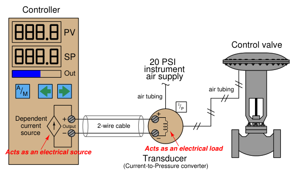
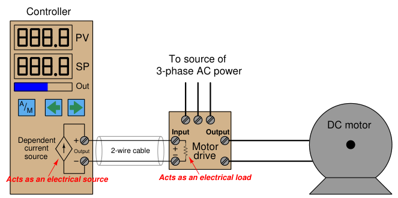
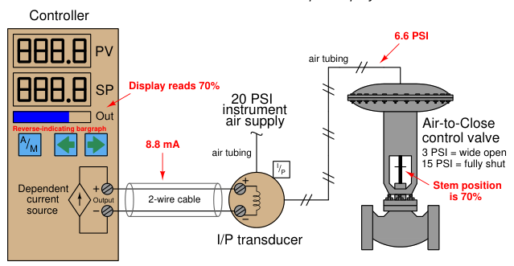
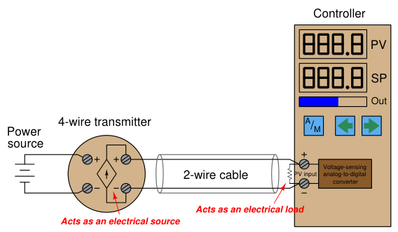
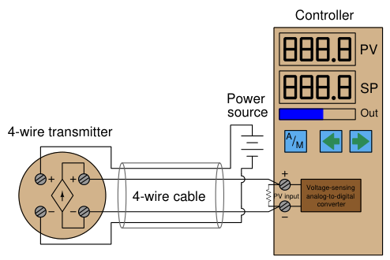
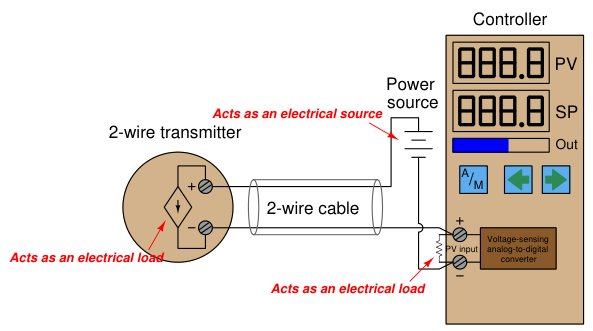
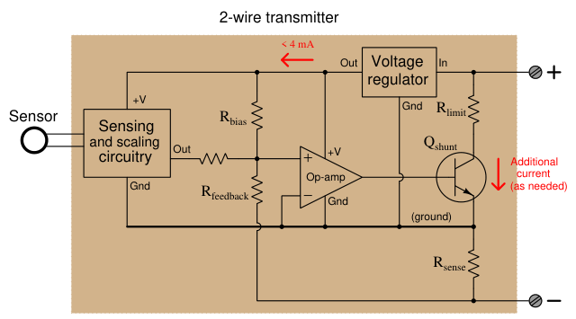
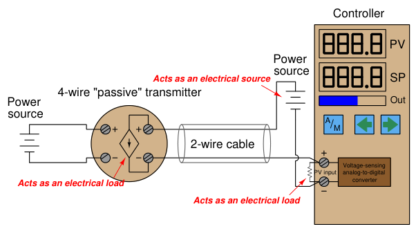

The original, as published: Tony R. Kuphaldt, Lessons In Industrial Instrumentation, Controller output, 4-wire and 2-wire current loops. CC BY 4.0, https://creativecommons.org/licenses/by/4.0/. Imported as published, from https://www.ibiblio.org/kuphaldt/socratic/sinst/book/liii.pdf https://www.ibiblio.org/kuphaldt/socratic/sinst/book/liii.pdf
The simplest form of 4-20 mA current loop is the type used to represent the output of a process controller, sending a command signal to a final control element. Here, the controller supplies both the electrical power and signal information to the final control element, which acts as an electrical load. To illustrate, consider the example of a controller sending a 4-20 mA signal to an I/P (currentto-pressure) signal converter, which then pneumatically drives a control valve:

This particular controller has two digital displays, one for process variable (PV) and one for setpoint (SP), with a bargraph for displaying the output value (Out). One pushbutton provides the operator with a way to switch between Automatic and Manual modes (A/M), while two other pushbuttons provide means to decrement and increment either the setpoint value (in Automatic mode) or the Output value (in Manual mode). Inside the controller, a dependent current source provides the 4-20 mA DC current signal to the I/P transducer. Like all current sources, its purpose is to maintain current in the “loop” circuit regardless of circuit resistance or any external voltage sources. Unlike a constant current source, a “dependent” current source (represented by a diamond shape instead of a circle shape) varies its current value according to some external stimulus. In this case, either the mathematical function of the controller (Automatic mode) or the arbitrary action of the human operator (Manual mode) tells the current source how much DC current it should maintain in the circuit. For example, if the operator happened to switch the controller into Manual mode and set the output value at 50%, the proper amount of DC current for this signal percentage would be 12 mA (exactly half-way between 4 mA and 20 mA). If everything is working properly, the current in the “loop” circuit to the I/P transducer should remain exactly at 12 mA regardless of slight changes in wire resistance, I/P coil resistance, or anything else: the current source inside the controller will “fight” as hard as it has to in order to maintain this set amount of current. This current, as it flows through the wire coil of the I/P transducer mechanism, creates a magnetic field inside the I/P to actuate the pneumatic mechanism and produce a 9 PSI pressure signal output to the control valve (9 PSI being exactly half-way between 3 PSI and 15 PSI in the 3-15 PSI signal standard range). This should move the control valve to the half-way position. The details of the controller’s internal current source are not terribly important. Usually, it takes the form of an operational amplifier circuit driven by the voltage output of a DAC (Digital-to-Analog Converter). The DAC converts a binary number (either from the controller’s automatic calculations, or from the human operator’s manual setting) into a small DC voltage, which then commands the opamp circuit to regulate output current at a proportional value.
The scenario is much the same if we replace the I/P and control valve with a variable-speed motor drive. From the controller’s perspective, the only difference it sees is a resistive load instead of an inductive load. The input resistance of the motor drive circuit converts the 4-20 mA signal into an analog voltage signal (typically 1-5 V, but not always). This voltage signal then commands the motor drive circuitry, telling it to modulate the power going to the electric motor in order to drive it at the desired speed:

Here, the variable-speed motor drive is a high-power electronic circuit that takes 3-phase AC power in and converts it to DC power at a variable voltage (that voltage level controlled by the 4-20 mA signal from the controller output). Another style of motor “drive” is one that takes in AC power and outputs 3-phase AC power at variable voltage and frequency to power an AC induction motor. This latter style is usually called a variable frequency drive or VFD, but it looks the same to the controller output: a fixed resistive load accepting the 4-20 mA output signal.
In some process applications the final control element is “reverse-acting” in that a controller output current value of 4 mA tells the FCE to go to its “full” (100%) capacity and a controller output current value of 20 mA commands the FCE to go to its minimum (0%) capacity. Such is the case with an I/P transducer driving an “air-to-close” pneumatic control valve, where the valve’s spring works to push the throttling mechanism open and air pressure on the valve diaphragm works to push the throttling mechanism shut. A practical reason for designing a control system like this is if the dictates of process safety require the valve go wide-open if ever the instrument air supply fails or the 4-20 mA output signal circuit fails. In such applications, we need to configure the controller in such a way that the output display (digital read-out and/or bargraph) is reverse-indicating so as to avoid confusing any human operator using the controller. Since 4 mA represents a wide-open control valve and 20 mA represents a fully shut control valve, a reverse-indicating controller will display 0% output when the current signal is 20 mA and 100% output when the current signal is 4 mA (i.e. the controller display is a direct representation of control valve stem position, not of the current signal itself):
Air-to-Close valve with controller configured for ‘‘reverse indication’’ on its output display

It should be noted that direct or reverse indication on the controller’s faceplate is unrelated to direct or reverse control action of the controller’s algorithm. The former is merely the way in which the output signal is graphically represented to the human operator while the latter is the relationship between the process variable (PV) signal and the controller’s output (MV) signal necessary for negative-feedback control. For the sake of argument, this controller’s automatic action could still be direct (i.e. greater PV signal = greater output signal) even though its output bargraph indication is reverse in order to faithfully show valve stem position to the human operator.
DC electric current signals may also be used to communicate process measurement information from transmitters to controllers, indicators, recorders, alarms, and other input devices. Recall that the purpose of a transmitter is to sense some physical variable (e.g. pressure, temperature, flow) and then report that quantity in the form of a signal, in this case a 4 to 20 milliamp DC current proportional to that measured quantity. The simplest form of 4-20 mA measurement loop is one where the transmitter has two terminals for the 4-20 mA signal wires to connect, and two more terminals where a power source connects. These transmitters are called “4-wire” or “self-powered” units. The current signal from the transmitter connects to the process variable input terminals of the controller to complete the loop:

Some process controllers are not equipped to directly accept milliamp input signals, but rather can only interpret DC voltage signals. In such cases we must connect a precision resistor across the controller’s input terminals to convert the 4-20 mA transmitter signal into a standardized analog voltage signal the controller can understand. A voltage signal range of 1 to 5 volts is standard, although some models of controller use different voltage ranges and therefore require different precision resistor values. If the voltage range is 1-5 volts and the current range is 4-20 mA, the precision resistor value must be 250 ohms according to Ohm’s Law. Since this is a digital controller, the input voltage at the controller terminals is interpreted by an analog-to-digital converter (ADC) circuit, which converts the measured voltage into a digital number the controller’s microprocessor can interpret.
In some installations, transmitter power is supplied through additional wires in the cable from a power source located near the controller:

The obvious disadvantage of this scheme is the requirement of two more conductors in the cable. More conductors means the cable will be larger-diameter and more expensive for a given length. Cables with more conductors will require larger electrical conduit to fit in to, and all field wiring panels will have to contain more terminal blocks to marshal the additional conductors. If no suitable electrical power source exists at the transmitter location, though, a 4-wire cable is necessary to service a 4-wire transmitter.
It is possible to convey electrical power and communicate analog information over the same two wires using 4 to 20 milliamps DC, if we design the transmitter to be loop-powered. A looppowered transmitter connects to a process controller with only two wires, which is why loop-powered transmitters are synonymously known as 2-wire transmitters:

Here, the transmitter is not really a current source in the sense that a 4-wire transmitter is. Instead, a 2-wire transmitter’s circuitry is designed to act as a current regulator, limiting current in the series loop to a value representing the process measurement, while relying on a remote source of power to motivate the electric current. Please note the direction of the arrow in the transmitter’s dependent current source symbol, and how it relates to the voltage polarity marks. Refer back to the illustration of a 4-wire transmitter circuit for comparison. The current “source” in this looppowered transmitter actually behaves as an electrical load6, while the current source in the 4-wire transmitter functioned as a true electrical source. A loop-powered transmitter gets its operating power from the minimum terminal voltage and current available at its two terminals. With the typical source voltage being 24 volts DC, and the maximum voltage dropped across the controller’s 250 ohm resistor being 5 volts DC, the transmitter should always have at least 19 volts available at its terminals. Given the lower end of the 4-20 mA signal range, the transmitter should always have at least 4 mA of current to function on. Thus, the transmitter will always have a certain minimum amount of electrical power available on which to operate, while regulating current to signal the process measurement to the receiving instrument.
6Some of my students have referred to such a circuit as a smart load, since it functions as a load but nevertheless exerts control over the circuit current.
Internally, the electronic hardware of a 2-wire transmitter circuitry resembles the following (simplified) diagram. Note that everything shown within the shaded rectangle is represented by the “2-wire transmitter” circle in the previous diagram:

All sensing, scaling, and output conditioning circuitry inside the transmitter must be designed to operate on less than 4 mA of DC current, and at a modest terminal voltage. In order to create loop currents exceeding 4 mA – as the transmitter must do in order to span the entire 4 to 20 milliamp signal range – the transmitter circuitry uses a transistor to shunt (bypass) extra current from one terminal to the other as needed to make the total current indicative of the process measurement. For example, if the transmitter’s internal operating current is only 3.8 mA, and it must regulate loop current at a value of 16 mA to represent a condition of 75% process measurement, the shunt transistor will be driven by the opamp to bypass exactly 12.2 mA of current (because 3.8 mA + 12.2 mA = 16.0 mA). The very low amount of electrical power available at a 2-wire transmitter’s terminals limits its functionality. If the transmitter requires more electrical power than can be delivered with 4 milliamps and 19 volts (minimum each), the only solution is to go with a 4-wire transmitter where the power conductors are separate from the signal conductors. An example of a process transmitter that must be 4-wire is a chemical analyzer such as a chromatograph, requiring enough power to operate an electrical heater, solenoid valves, and an on-board computer to process the sensor data. There is simply no way to operate a machine as complex and power-hungry as a 2010-era chromatograph on
4 milliamps and 19 volts! Early current-based industrial transmitters were not capable of operating on such low levels of electrical power, and so used a different current signal standard: 10 to 50 milliamps DC. Loop power supplies for these transmitters ranged upwards of 90 volts to provide enough power for the transmitter. Safety concerns made the 10-50 mA standard unsuitable for some industrial installations, and modern microelectronic circuitry with its reduced power consumption made the 4-20 mA standard practical for nearly all types of process transmitters.
Some self-powered (4-wire) analog electronic transmitters are designed to behave as electrical loads rather than as electrical sources. Such transmitters are commonly referred to as having passive or sinking 4-20 mA outputs, as opposed to the active or sourcing 4-wire transmitters previously described:

At first this seems needlessly confusing. Why build a self-powered transmitter requiring a second power supply in the circuit to drive the 4-20 mA signal? The reason for this type of transmitter’s existence is the sheer popularity of loop-powered 2-wire 4-20 mA transmitters. Loop-powered field instruments have become so popular in industry that many control systems, PLCs, indicators, and other receiving devices have their own loop power supply built in so that these systems can only connect to loads and are therefore incompatible with current-sourcing 4-wire transmitters. Thus, “passive” or “sinking” 4-wire transmitters were developed to accommodate control systems designed to work (only) with loop-powered instruments. Some 4-wire transmitters are configurable for either passive or active (i.e. sinking versus sourcing) operation, requiring the installing technician to pay close attention in order for the circuit to properly function.